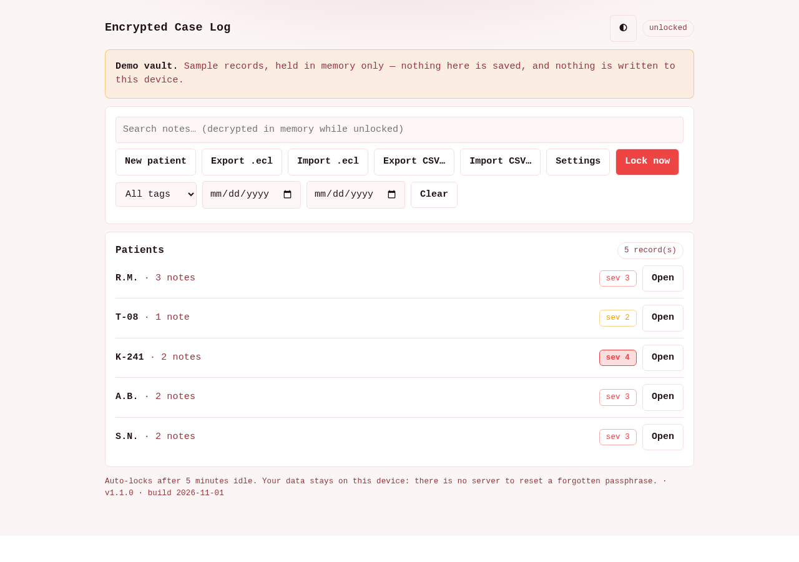

Clinical notes · sealed on the device
Notes that never leave the room.
Per-patient notes, encrypted at rest with AES-256-GCM in the browser's own storage. No account, no server, no sync — and a page whose Content-Security-Policy makes an outbound request impossible even by accident.
on device
What it does
A case file per patient, and nothing in the middle.
Three things matter in a clinical log kept on a phone or a clinic laptop: it is encrypted, it is there when the network is not, and it is yours to hand over.
01
Encrypted at rest
A random data key encrypts every record with a fresh 96-bit IV, and the record id travels as the AAD — so a record cannot be swapped, replayed or silently replaced.
02
Offline by construction
One HTML file and five kits, no build step, no CDN, no dependency. The page forbids outbound connections at the policy level, not by good intentions.
03
Yours to hand over
Export the encrypted .ecl archive, or a plaintext CSV behind a warning.
Import decrypts first, then reads it through the shared case interchange.
The app, not a picture of it
Try the real thing below.
This is the shipped app in a frame, running against a sample vault held in memory — nothing you do here is saved to your device. Move it to a view worth seeing:

The frame loads only over http(s); if it cannot load, the screenshot behind it stays put. Open the demo on its own →
New in 1.1
The parts a working clinic asked for.
All of it offline and dependency-free: no chart library, no PDF writer, no translation service, no icon CDN.
01
Severity, at last
Notes carry a grade of 1–4 and each patient gets a severity line drawn as hand-rolled SVG — the field the record shape always had, now visible.
02
Import merges
Opening a colleague's .ecl no longer wipes your vault. You get a dry-run
count — new, newer, identical — and a merge, with replace still available if you ask.
03
Passphrase and recovery, rotated
Change the passphrase (the data key is only re-wrapped, never a record re-encrypted) and rotate the 24-word recovery code, which kills the old one.
04
Undo, and history
Deleting is a tombstone you can undo until you lock; every save keeps up to five previous versions as ciphertext, restorable in one click.
05
Print, and CSV in
window.print() with a print stylesheet hands a record over on paper offline;
CSV import mirrors the export, with a column preview before anything is written.
06
Four languages, one keyboard
English, हिन्दी, ગુજરાતી and मराठी bundled as local dictionaries; N / Ctrl+S L for the busy-clinic case.
07
A decoy vault
A second passphrase opens a separate, empty vault with its own key. Nothing marks it as a decoy, because a marker would defeat it.
08
Settings that stay local
Auto-lock minutes, lock-on-tab-hide, text size, a redaction curtain for shared screens, storage quota, vault health check, and the self-tests on demand.
What it refuses to do
The omissions are the design.
Every one of these was left out on purpose. A clinical tool that adds any of them stops being a tool you can carry into a room.
- No account
- There is nobody to sign in to. The vault is a file in your browser's storage.
- No sync, no cloud
- Nothing is uploaded, so nothing can be breached, subpoenaed or leaked by a vendor.
- No plaintext index
- Search decrypts every record into memory on unlock and throws the index away on lock. It is why unlock is linear, and why the honest ceiling is about 50,000 records.
- No passphrase reset
- No server holds a key. Lose the passphrase and the recovery code and the data is unrecoverable — that is the guarantee, not an oversight.
- No telemetry
- The page carries
connect-src 'none'. It could not phone home if it wanted to.
The numbers
Small surface, checkable claims.
Every figure here is printed by the app or its test suite, and the badges above are generated from this repository — not fetched from an image service.
Where it comes from
Five kits, composed.
The app re-implements none of them. Each is a single file
that works from file:// and from Pages.
crypto-kitcase-kitsearch-kitexport-kitweb-kiti18n-kit
A case is a case-kit case; a note is one of its
dated symptoms. That is what lets a record made here be read by the family of clinical apps.
How to run it
Three ways, no installer.
The Windows build and the APK are portable: no admin rights, no setup wizard. In the browser it is a single page.
git clone https://github.com/drsamonline/app-encrypted-case-log
cd app-encrypted-case-log
node tests/self-tests.js # 21 tests, no browser
python3 scripts/icons.py # the PWA icon set, locally
open docs/play/index.html # the app itself
open docs/play/index.html?demo=1#note # the demo vault